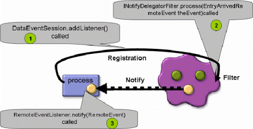
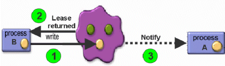

Section Summary: The new Notify Session API provides a unified and consistent mechanism for event registration.
Overview
 The Event Session API is the low level API for supporting notifications. It is preferable to use the Notify Container (which can be used programmatically using its SimpleNotifyContainerConfigurer).
The Event Session API is the low level API for supporting notifications. It is preferable to use the Notify Container (which can be used programmatically using its SimpleNotifyContainerConfigurer).
In some cases, SBA applications require the ability to call the user's business logic once a relevant event occurs in the space. This can be a trader desk application that is notified when a quote stock object modifies its data, or when a matching engine removes/updates a matched order. The space supports a message delivery mechanism that allows clients to register for matching events inside the space. Once a matching event occurs in the space, the space triggers an event and notifies the client by calling the client business logic.
| The session-based messaging API replacing the old NotifyDelegator that is deprecated with GigaSpaces 7.0. We highly recommend that you use the new Session-based messaging API, however, the NotifyDelegator is backwards compatible and can still be used in this version. |
Basic Flow:
- The JavaSpaces API includes the standard notify method, that allows an application to receive notifications once a new Entry has been written into the space. To receive notifications, the client application needs to register for notification delivery.
- The most important part of the notify registration is preparing the right template - all Entries that match the template (conducted by the appropriate operation), trigger an event back to the registered client application.
- When a new Entry that matches the template arrives at the space, the notify method of the RemoteEventListener in the registration is invoked, supplying the client with a RemoteEvent object.
When using the Session Event API, you should implement 3 basic routines:
- Register for notifications.
- Filter the events before sent to the client (optional).
- Receive the event.

The session-based messaging API is designed with the following objectives:
- Simple and unified interfaces - in previous releases, several different classes were used to register for notifications: NotifyDelegator, NotifyDelegatorMultiplexer, and MulticastNotifyDelegator.
- Single entry point - users access all the event-related services from a single entry point.
- Extensibility - allows simple extensions for other types of event services, as well as other configuration parameters.
- Backwards compatibility - coexists with the existing API in a way that allows a deprecation period without duplicating the code.
- Support for Spring bean creation/configuration.
- Batch notification support.
Advantages of the session messaging API compared to the regular JavaSpace.notify():
- No client codebase needs to be set.
- Provides the ability to get the Entry that triggered the event in the space.
- Allows registration for specific notification events, for example, write, update, take, and lease expiration events.
- Possibility to deliver events in FIFO order (default is non-FIFO).
- Supports both TCP and UDP transmission protocols (configurable delivery models: Multicast/Unicast).
- Supports server-side notification filtering capabilities.
The session API provides a convenient and efficient mechanism for multicasting messaging to multiple recipients through the space. Every recipient can register for notifications by creating a DataEventSession object.
| When using EventSession in several threads, each thread should create and use its own EventSession . |
The sender of the message can write an Entry with a limited lease time to the space. The recipients receive the Entry through the remote event. New recipients have the opportunity to get old messages from the space through read. The messages are cleaned automatically by the expiration mechanism.
 Do not confuse the JavaSpaces notify method, used for registering the template, with the notify method of the RemoteEventListener, that is a callback method invoked by the space.
Do not confuse the JavaSpaces notify method, used for registering the template, with the notify method of the RemoteEventListener, that is a callback method invoked by the space.
The RemoteEventListener object supplied in the JavaSpaces notify method might be the client itself, or any other remote listener that the client wishes to receive the event from. This gives enormous flexibility, and enables various event-fetching models, like filtering and polling. For example, a mobile client can use the Jini Mailbox Service to hold events until it reconnects to the network. The RemoteEventListener object is a remote object, and its stub is used by the space to invoke the notify callback. Hence, the proxy of the listener must be annotated with a suitable codebase, so that the space can download it on demand. This usually means that the client or someone acting for the client should run an HTTP server to serve class files or jar files, and that the client should annotate the codebase via the java.rmi.server.codebase system property.
Supported Topologies
Event registration is available with all supported space topologies. Each topology allows the client to receive the event. Still, there are behaviors you should be aware of when deploying the application.
Single Remote Space
When registering for notifications with a remote space, the space performs a remote call when delivering the event to the client application.
Embedded Space
When the client registers for notifications running in the same JVM as the space, no remote calls are involved. This allows fast notification delivery without serialization of the object that started the event.
Replicated Space
When deploying a replicated space, you might want to replicate notify registration from the source space (primary) to the replica (backup space), allowing the replica space to continue and send notifications in case the source space failed.
Receiving events occurs as a result of data replication, and not directly from a client-space operation. This is popular in WAN-based applications, where a remote client running in the remote site wants to be notified when an operation occurs in the source space, without getting the actual notification from the remote source space, but from a replica space that is located at its local site.
Partitioned Space
The most common requirement when deploying partitioned spaces is to register the notification to all partitions, and receive the notifications from all partitions when a matching event is identified. This is the default behavior of the partitioned space.
Local Cache
When registering for notifications using a proxy running in the local cache, notifications are delivered from the master space. Any matching event in the master space is delivered to the registered client. Events in the local cache are not delivered to the registered client, unless you specifically register for events by getting the local cache proxy.
Local View
When registering for notifications using a proxy running in the local view, notifications are delivered from the local view. These do not involve remote calls and are based on activities performed in the local view. The events do not affect the remote master space or other clients accessing the master space. The events delivered from the local view are relatively fast, and do not involve serialization. Since notifications received from the local view are based on the local view query filter, the registered client might not receive events that other clients, registered for notifications using the master space, receive.
Register for Notifications
EventSessionFactory
The EventSessionFactory creates DataEventSession objects. The EventSessionFactory is associated with a space, and is required in order to create a factory. Once a factory has been created, it can be used to create sessions. Every session is configured according to an EventSessionConfig object and is bounded to a transaction.
The EventSessionFactory includes the following methods:
EventSessionFactory getFactory(IJSpace)
DataEventSession newDataSession(IJSpace, Transaction, String)
DataEventSession newDataEventSession(EventSessionConfig, Transaction)
Simple Template Registration
Here is an example for getting an EventSessionFactory, generating a DataEventSession, and registering for notifications using simple template and cancelling the registeration:
public class DataSessionEventExample implements RemoteEventListener { public void simpleTemplate() throws Exception { EventSessionFactory factory = EventSessionFactory.getFactory(space); EventSessionConfig config = new EventSessionConfig(); DataEventSession session = factory.newDataEventSession(config, null); EventRegistration registration = session.addListener(new MyData(),this,Lease.FOREVER,null,null,NotifyActionType.NOTIFY_ALL); // wait for notifications session.removeListener(registration ); session.close(); } }
SQLQuery Template Registration
Here is an example for getting an EventSessionFactory, generating a DataEventSession, and registering for notifications using a SQLQuery template and cancelling the registration:
public class DataSessionEventExample implements RemoteEventListener { public void sqlTemplate() throws Exception { EventSessionFactory factory = EventSessionFactory.getFactory(space); EventSessionConfig config = new EventSessionConfig(); DataEventSession session = factory.newDataEventSession(config, null); SQLQuery query = new SQLQuery (new MyData() , "m_integer > 22 and m_long > 15"); EventRegistration registration = session.addListener(query ,this,Lease.FOREVER,null,null,NotifyActionType.NOTIFY_ALL); // wait for notifications session.removeListener(registration ); session.close(); } }
Batch Notification Registration
When a client expects to receive a large amount of events, it is recommended to deliver the events from the space into the client in batches. Batch notifications minimize the amount of remote calls the space needs to perform in order to deliver the events to the client. The downside when using this approach is the potential of some latency issues when delivering the events to the client.
public class DataSessionEventExample implements RemoteEventListener { public void batchNotify() throws Exception { final long TIME = 5000; EventSessionFactory factory = EventSessionFactory.getFactory(space); EventSessionConfig config = new EventSessionConfig(); config.setFifo(true); // setting batch size to 3 entries config.setBatch(3, TIME); DataEventSession session = factory.newDataEventSession(config, null); EventRegistration registration = session.addListener(new MyData(),this,Lease.FOREVER,null,null,NotifyActionType.NOTIFY_ALL); // wait for notifications session.removeListener(registration); session.close(); } }
EventSession
The session-based API defines an entity called EventSession – a stateful registration service that is used to register/un-register listeners to the space. The EventSession is created using the EventSessionFactory, and configured using the EventSessionConfig entity.
The EventSessionConfig can be configured using:
- A specific API
- The Properties object
- The properties file located in the classpath
- Using a Spring application context
The created session is bound to a specific space (or cluster), and can be bounded to a specific transaction. Closing a session is done via the close() method.
The EventSession interface includes the following methods:
public interface EventSession { Transaction getTransaction(); EventSessionConfig getSessionConfig(); void close() throws RemoteException, UnknownLeaseException; }
DataEventSession
The DataEventSession is a unified class that encapsulate the capabilities of the:
- NotifyDelegator
- NotifyDelegatorMultiplextor
- MulticastNotifyDelegator
The addListener() method on the DataEventSession receives, among other parameters, the NotifyActionType parameter:
- NOTIFY_WRITE
- NOTIFY_TAKE
- NOTIFY_UPDATE
- NOTIFY_LEASE_EXPIRATION
- NOTIFY_NONE
- NOTIFY_ALL
 This type is a type-safe replacement for the old NotifyModifiers constants.
This type is a type-safe replacement for the old NotifyModifiers constants.
 Notifications for expired objects sent both from the primary and the backup space (in case you have such).
Notifications for expired objects sent both from the primary and the backup space (in case you have such).
The DataEventSession interface includes the following methods:
public interface DataEventSession extends EventSession { EventRegistration addListener(Object template,RemoteEventListener listener,long lease,MarshalledObject handback, INotifyDelegatorFilter filter,NotifyActionType actionTypes) throws RemoteException, TransactionException; EventRegistration addListener(Entry template,RemoteEventListener listener, long lease,MarshalledObject handback, INotifyDelegatorFilter filter,NotifyActionType actionTypes) throws RemoteException, TransactionException; void removeListener(EventRegistration registration) throws RemoteException, UnknownLeaseException; }
EventRegistration
The EventRegistration is a utility class used as a return value for event-interest registration methods. Objects in this class encapsulate the information needed by a client in order to identify a notification as a response to a registration request, and to maintain that registration request. It is not mandatory for an event-interest registration method to use this class.
A registration of interest in an event that occurs in the scope of a transaction is leased in the same way as other event interest registrations. However, the duration of the registration is the minimum length of the lease and the duration of the transaction. In other words, when the transaction ends (either because of a commit or an abort) the interest registration also ends. This is true even if the lease for the event registration has not expired, and no call has been made to cancel the lease.
net.jini.core.event.EventRegistration implements Serializable { //Returns the identifier that will be used in all RemoteEvents generated for //this interest registration. long getID() //Returns the Lease object for this registration. lease getLease() //Returns the value of the sequence number on the event kind that was current // when the registration was granted, allowing comparison with the sequence number // in any subsequent notifications. long getSequenceNumber() //Returns the source that will be used in all RemoteEvents generated for this interest registration. Object getSource() }
EventSessionConfig
This class is used to configure an EventSession. It contains a set of configuration parameters that influence the way event listeners are registered with the space, and how event notifications are processed.
There are three different ways to create an EventSessionConfig object:
- Use the empty constructor, and set the different parameters using API.
- Pass a Properties object, that contains a list of parameters according the a list specified below, to the constructor.
- Use a pre-configured, named set of parameters. The name is used to load a properties file that resides in the config directory
The names of the parameters that can be used in the Properties object or file:
- comType – specifies the communication protocol: UNICAST/MULTIPLEX/MULTICAST.
- batchSize – buffered notifications – the size of the batch used when sending notifications to the client. Must be used with batchTime.
- batchTime – the maximum elapsed time between two batch notifications. Must be used with batchSize.
- replicateNotifyTemplate – whether to replicate the registration to other spaces in the cluster.
- triggerNotifyTemplate – whether to send notifications from all spaces in the cluster.
- leaseListener – LeaseListener callback to be called in case the renew failed.
- fifo – whether to return notification in fifo order or as soon as possible.
- autoRenew – whether to automatically renew the lease of the registered listeners.
- renewExpiration – specifies the time of expiration of the registration. Used when autoRenew=true.
- renewDuration – specifies the time for each renew. Used when autoRenew=true.
- renewRTT – specifies the time that takes the Lease to renew. Used when autoRenew=true.
Receive the Event
RemoteEventListener
The RemoteEventListener interface should to be implemented to receive the notification from the space. The class implementing this interface does not need to be the object that originally registered interest in the occurrence of an event. To allow the notification of an event's occurrence to be sent to an entity other than the one that made the interest registration, the registration call needs to accept a destination parameter, which indicates to which object the notification should be sent. This parameter must be an object which supports the RemoteEventListener interface.
public interface net.jini.core.event.RemoteEventListener extends Remote, EventListener { //Notify the listener about an event. public void notify(RemoteEvent theEvent) throws UnknownEventException,RemoteException }
Below, the DataSessionEventExample implements the RemoteEventListener. The EntryArrivedRemoteEvent is used to retrieve the object that starts the event:
public class DataSessionEventExample implements RemoteEventListener { public void notify(RemoteEvent theEvent) throws UnknownEventException, RemoteException { try { EntryArrivedRemoteEvent arrivedRemoteEvent =(EntryArrivedRemoteEvent) theEvent; MyData msg = (MyData) arrivedRemoteEvent.getObject(); // ... } catch (Exception ex) { ex.printStackTrace(); } } }
EntryArrivedRemoteEvent
The EntryArrivedRemoteEvent allows you to retrieve the object that triggered the event, as well as retrieving additional meta data about the event.
The EntryArrivedRemoteEvent extends the RemoteEvent, and implements the Externalizable and Cloneable interfaces.
The EntryArrivedRemoteEvent includes the following methods:
// Returns a shallow copy of this EntryArrivedRemoteEvent instance. Object clone() // Returns the ExternalEntry that triggered the specified remote event. ExternalEntry getExternalEntry() String getKey() // Returns a notify type of this event. int getNotifyType() // Returns the entry by specification of user. Object getObject() MarshalledObject getRegistrationObject() Object getSource() //Returns the unique uid of the space the event originated from. Uuid getSpaceUuid() //returns multicast templateID String getTemplateUID() // specific is the event comes from replication or not. boolean isFromReplication()
Cancelling Registration and Closing the Session
Cancelling Notify Registration
To cancel the notify registration, call the following:
DataEventSession removeListener(EventRegistration registration)
This frees the relevant resources allocated to manage the notify registration, such as cancelling the automatic lease renewal, unexporting object client stubs, and releasing the client FIFO thread.
Closing the Session
To close the session, call the following:
DataEventSession.close();
This cancels all the registrations done with the DataEventSession. You need to start a new session in order to register for new events.
Filtering Events
The session messaging API allows for space-side notify filtering. To control the events delivered to the client, implement the INotifyDelegatorFilter interface, pass the object implementing the INotifyDelegatorFilter, and return a false value from the INotifyDelegatorFilter.process for events you do not want to be sent to the registered client.
INotifyDelegatorFilter
The INotifyDelegatorFilter allows you to execute business logic at the space side before the event is delivered to the client. The INotifyDelegatorFilter might prevent a specific event from being delivered to the client registered for the matching event, by returning false from the process method.
The INotifyDelegatorFilter interface includes the following methods:
public interface INotifyDelegatorFilter extends Serializable { // called when the filter created public void init( IJSpace space, Object notifyTemplate ); // called before the event delivered to the client. Returning false will not // deliver the event to the client public boolean process( EntryArrivedRemoteEvent theEvent); // called when the registration cancelled public void close(); }
INotifyDelegatorFilter Implementation Example
Below is an example for the INotifyDelegatorFilter implementation, where the process() method allows only messages with the value aaa to be delivered to the client:
package com.j_spaces.examples.sessionevent; import net.jini.core.entry.Entry; import net.jini.core.entry.UnusableEntryException; import com.j_spaces.core.IJSpace; import com.j_spaces.core.client.EntryArrivedRemoteEvent; import com.j_spaces.core.client.INotifyDelegatorFilter; public class MyNotifyFilter implements INotifyDelegatorFilter { public void init(IJSpace space, Object entry) { System.out.println(" ->> Init called - Registration Template:"+entry); } // only messages with m_string = aaa will be delivered to the registered client public boolean process(EntryArrivedRemoteEvent theEvent) { EntryArrivedRemoteEvent arrivedRemoteEvent = (EntryArrivedRemoteEvent) theEvent; MyData msg; try { msg = (MyData) arrivedRemoteEvent.getObject(); int notifyType = arrivedRemoteEvent.getNotifyType(); String msgStr = " ->> process called - Type:" + DataSessionEventExample.getNotifyDesc(notifyType)+" - Data:" + msg ; System.out.println(msgStr); return (msg.m_string.equals("aaa")); } catch (UnusableEntryException e) { e.printStackTrace(); } return false; } public void close() { System.out.println(" ->> closed called"); } }
The notify registration:
EventSessionFactory factory = EventSessionFactory.getFactory(space); EventSessionConfig config = new EventSessionConfig(); DataEventSession session = factory.newDataEventSession(config, null); MyNotifyFilter filter = new MyNotifyFilter (); EventRegistration registration = session.addListener(new MyData(),this,Lease.FOREVER,null,filter,NotifyActionType.NOTIFY_ALL);
When writing the following objects, only msg1 is delivered to the client who registered for notifications:
MyData msg1 = new MyData("aaa", new Long (100 ) , new Time(10,5,20) , new Date (107, 10, 40),new Integer (60 ) ,new Double (500.2)); MyData msg2 = new MyData("bbb", new Long (100 ) , new Time(10,5,20) , new Date (107, 10, 40),new Integer (60 ) ,new Double (500.2)); space.write(msg1, null, Lease.FOREVER); space.write(msg2, null, Lease.FOREVER);
 The INotifyDelegatorFilter implementation class should be part of the space classpath.
The INotifyDelegatorFilter implementation class should be part of the space classpath.
Advanced Options
Auto Re-Register Notifications After Space Failure
Event Session under the hood uses Notification Registration. When a remote client with an independent life cycle creates a Event Session and is shutdown, the registration will remain in the space and can be a unnecessary overhead for the space if there are multiple clients registered for many templates.
To avoid this overhead, an optimization is required where notification registration is created with a limited lease and the client periodically renews the lease to keep it active. If client is shutdown or does not need this events anymore, the lease is not renewed thereby removing the registration.
Lease Renewal Manager provides a systematic lease renewal and management framework and is used by Event Session for managing the notification registration leases. Leases are managed in an automatic manner without any application intervention. More information regarding Lease Renewal Manager can be found here.
To allow a remote client using an Event Session to continue and receive notifications in case the space cluster was completely shutdown and restarted, you should use the LeaseListener and re-create the Event Session in case its lease renewal failed (i.e. LeaseListener.notify() been called). The Event Session must enable the autoRenew property to instruct GigaSpaces to construct a Lease Renewal Manager and have the associated LeaseListener implementation to be invoked.
With this approach we assume the space will be available is some point to acknowledge the registration and continue and send notifications for the matching events back to the client.
See below com.gigaspaces.events.EventSessionConfig methods you should use passing the LeaseListener implemenation:
setAutoRenew(boolean renew, net.jini.lease.LeaseListener listener) setAutoRenew(boolean renew, net.jini.lease.LeaseListener listener, long renewExpiration, long renewDuration, long renewRTT)
| Property | Description | Default | Unit |
|---|---|---|---|
| renew | If set to true, automatically performs lease renewal and call the LeaseListener.notify() if fails to renew, where the lease's desired expiration time has not yet been reached. | false | |
| renewExpiration | The period of time your notifications stopped from being renewed. Applies Only when renew is true | Lease.FOREVER | ms |
| renewDuration | The period of time that passes between client failure, and the time your notifications stop from being sent. Should be larger than renewRTT. Applies Only when renew is true. | 20000 | ms |
| renewRTT | RoundTripTime - The time that takes to reach the server and return. Applies Only when renew is true. | 10000 | ms |
| Prior calling the LeaseListener.notify() , the LeaseRenewalManager used by the Notify container, will remove the affected lease from its managed set of leases. |
public class MyLeaseListener implements LeaseListener{ public MyLeaseListener (DataEventSession session) { this.session=session; } DataEventSession session; //Called by the LeaseRenewalManager when it cannot renew a lease that it is managing, //and the lease's desired expiration time has not yet been reached. public void notify(LeaseRenewalEvent event) { System.out.println("Can't renew - try to re-register"); session.addListener(new MyData(),this,Lease.FOREVER,null,null,NotifyActionType.NOTIFY_ALL); System.out.println("Notfy ReRegistration Done!"); } }
Multicast Notifications
A special component within the space, Multicast Notify Worker, receives UDP notify registration requests. One of the most important features of the Multicast Notify Worker is its ability to identify templates that have already been registered and to utilize one subscription for many subscribers.
Slow Consumer
The Slow Consumer mechanism allows GigaSpaces to identify clients that cannot receive events and cancel their notify registration. This avoids system instability and out of memory problems.
Transient Notify Registration
Notify registrations are consider to be Transient.
Transient registrations are not persistent, and aren't recovered once the space is restarted.
Stale Notify Registration
When the space detects a stale notify registration (clients that registered for a notify registration but do not respond to the triggered event), the notify registration is cancelled.
If you need to terminate the notify registration before the lease expires, it is recommended to use the DataEventSession removeListener(EventRegistration registration) method. This cancels the registration lease.
Notifications with Transactions
When performing operations using transactions while performing notify registration using a null transaction object, matching events are delivered to clients only when the transaction is committed. Matching events for notify registration using a transaction object are triggered immediately when the operation is called using the same transaction object that is used as part of the notify registration.
Long Notification Lease Time
Use Lease.FOREVER as the notify registration lease time carefully. Registration for notifications is cancelled automatically when the notification object invalidates – i.e. is cleared by the garbage collector. With abnormal termination of the application, the garbage collector cannot finalize the registration object. This might lead to delays when delivering notifications to live clients, because the space accumulates notification registrations without the ability to clear these once they are invalidated.
The space includes a mechanism that detects stale notify registrations. Once a notification can't be delivered to a client (network failure or a dead client), the space retries to send the notification several times (according the space-config.notifier-retries parameter value) and once it fails, the notify registration is removed. If there are many clients terminating their operation in an abnormal manner while having an active event registration, the space might need some time to detect all stale clients and their notify registrations, delaying notification delivery to existing live clients.
The root cause of this behavior is the thread pool within the space engine that is responsible for delivering events to clients. When all pool threads are fully consumed, notification delivery time suffers, due to the time it takes to detect and remove all stale registrations.
 To configure the notification thread pool size you should use the following Space properties:
To configure the notification thread pool size you should use the following Space properties:
space-config.engine.notify_min_threads
space-config.engine.notify_max_threads
See the Scaling Notification Delivery for details.
To reduce the amount of stale registrations, register notification with a reasonable lease time (30 seconds - 2 minutes can be a good interval), and renew these using the LeaseRenewalManager every 30 seconds - 2 minutes. This ensures that once the client exists in an abnormal manner, the registration automatically expires and is removed, reducing the chance to fully consume the notification thread pool and delay notification delivery to live clients.
Improving Notification Speed
When the space is running in a different JVM than the client that is registered for the notifications, remote calls between the space and the notified client are involved. This means that the object that triggered the notification sent as part of the RemoteEvent is serialized at the space side, and de-serialized at the client side when delivered to the client. To minimize the impact of the serialization process, it is recommended to implement the Externalizable interface – this optimizes the footprint of the delivered packet across the network.
FIFO Based Notifications
When registering for notifications in FIFO mode, a special thread at the client side is responsible for delivering the events to the listener in FIFO order. By default, the space uses a dedicated thread pool to trigger the events at the client side, where the client itself is using another thread pool to call the listener notify method implementation.
The FIFO thread at the client side uses the event sequence number generated in the space to order the incoming events handled by the different threads, and calls the listener in the right order. Since the ordering requires some amount of synchronization, FIFO-based notifications are slower than non-FIFO notifications.
For the custom client-side FIFO-based notifications example, send a request to support@gigaspaces.com.
Notification Reliability
Notifications are asynchronous by nature. The client that triggered the notification is unaware of the notification delivery, and does not wait for an acknowledgement from the client receiving the notification for successful arrival of the event before continuing with its operation – i.e., when process A registers for notification delivery, and B writes an Entry to the space, process B does not wait for process A to receive the notification before taking control after the write operation. Process B might perform additional space operations before process A receives the notification.

When a space running in a fault tolerant configuration (primary-backup or partitioned-sync2backup cluster schemas) and the primary space fails, the backup space takes over and sends the notifications to the registered clients. In such a configuration, the primary and backup spaces do not establish a handshake mechanism when a notification is sent to the client. The backup space, that is running in stand-by mode, is unaware of the notifications that have been sent by the primary space, and the acknowledgement that the recipients clients provided when receiving the events is not sent.
To allow the backup space to send notifications when the primary fails and move to active mode, the backup space should have the notification registration information (notify templates) replicated/recovered from the primary space. The cluster configuration includes the }} and {{ tags, that allow notification registrations to survive space failures:
- replicate-notify-templates – boolean value. Set to true if you want to make notification templates available in the target space.
- trigger-notify-templates – boolean value. Set to true if you want to trigger matching notification templates when Entries are written to the space, because of replication (and thus causing remote events to be generated and sent to the notify template listeners). If set to true, triggering occurs; if set to false, triggering does not occur.
Replicate Notify Template and Trigger Notify Template
The replication group includes the ability to replicate notification registration, and the ability to trigger events that are a result of replication (and not a direct client operation) to the source space.
Here is the system behavior when using these options:
| Replicate Notify Template Setting | Trigger Notify Template Setting | Description |
|---|---|---|
| true | false | The client gets notifications from the master space while it is active after registration. If failover has been configured, it gets notifications from the replica space when the master space fails. |
| false | true | The client gets notifications only from the spaces it registered to for notifications. A notification occurs when data has been delivered to the space, either by a client application, or from the replication. |
| true | true | The client gets notifications from all clustered spaces after registration. The client gets multiple notifications for every space event. |
| false | false | The client gets notifications only from the spaces to which it registered. The client does not get notifications from spaces that received their data by replication. |
Replicated notify templates and triggered notify templates are orthogonal. However, if you enable them both, you should be aware that for each Entry that matches the notify template and is replicated to another space, you get an event.
This might result in more events than you initially intended. You can use the source of the event to check which space triggered it.
Guaranteed Notifications - Notification Delivery During Failover
 New in GigaSpaces 7.0
New in GigaSpaces 7.0
Due to the asynchronous nature of notification delivery, when a primary space fails right after replicating an operation to the backup space and before sending the notification to the registered client, the backup space might not be able to send the missing notifications, since it is in the process of moving to active mode.
This means that during this very short period of time, the registered client might not receive events that occurred in the primary space and were replicated to the backup space.
To ensure notification delivery by the backup space during the failover period,guaranteed notifications mode needs to be enabled:
EventSessionFactory factory = EventSessionFactory.getFactory(space); EventSessionConfig config = new EventSessionConfig(); config.setGuaranteedNotifications(true); config.setReplicateNotifyTemplate(true); config.setTriggerNotifyTemplate(false); DataEventSession session = factory.newDataEventSession(config, null);
The replicate-notify-template mode should be enabled, otherwise notify registrations will not be replicated to the backup and notifications delivery will not be guaranteed:
config.setReplicateNotifyTemplate(true);
The trigger-notify-template should also be disabled (set to false), since we don't want notification delivery both from the primary and backup space:
config.setTriggerNotifyTemplate(false);
The onewaynotify should be set to false. this system property should be set on the server side.
The default mode for notificaiotn is one way, which means the invocation does not wait for packet to get to the target, it just write it to network and return.
In two way, the operation waits for a reply from the target in order to make sure it was executed.
The space (gsc)is the source and the the listener (client) is the target.
-Dcom.gs.onewaynotify(false);
Known Limitations
 The guaranteed notifications feature is available only for primary backup topologies.
The guaranteed notifications feature is available only for primary backup topologies.
- After failover you might have double notifications sent for the same event - once from the primary and once from the backup.
- Notification delivery in case of a failover can not be guaranteed for FIFO based notifications.
- Notification delivery in case of a failover can not be guaranteed for LEASE_EXPIRATION notifications.